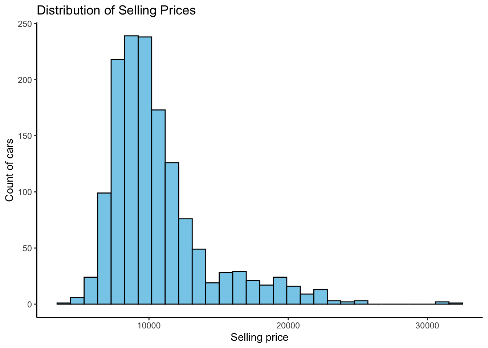

rm(list = ls())
library(tidyverse)
library(glmnet)
library(lubridate)
library(caret)
library(dummy)
library(gamlr)
library(rmarkdown)
library(GGally)
library(rpart)
library(rpart.plot)
library(corrplot)Problem Set 3
1
Part 2
Within this dataset there are a total of 1,436 observations and 39 columns of different features. 36 our of the 39 features are numeric date types, whereas 3 are categorical data types.
cars = read_csv("ToyotaCorolla.csv")Rows: 1436 Columns: 39
── Column specification ────────────────────────────────────────────────────────
Delimiter: ","
chr (3): Model, Fuel_Type, Color
dbl (36): Id, Price, Age_08_04, Mfg_Month, Mfg_Year, KM, HP, Met_Color, Auto...
ℹ Use `spec()` to retrieve the full column specification for this data.
ℹ Specify the column types or set `show_col_types = FALSE` to quiet this message.glimpse(cars)Rows: 1,436
Columns: 39
$ Id <dbl> 1, 2, 3, 4, 5, 6, 7, 8, 9, 10, 11, 12, 13, 14, 15, 1…
$ Model <chr> "TOYOTA Corolla 2.0 D4D HATCHB TERRA 2/3-Doors", "TO…
$ Price <dbl> 13500, 13750, 13950, 14950, 13750, 12950, 16900, 186…
$ Age_08_04 <dbl> 23, 23, 24, 26, 30, 32, 27, 30, 27, 23, 25, 22, 25, …
$ Mfg_Month <dbl> 10, 10, 9, 7, 3, 1, 6, 3, 6, 10, 8, 11, 8, 2, 1, 5, …
$ Mfg_Year <dbl> 2002, 2002, 2002, 2002, 2002, 2002, 2002, 2002, 2002…
$ KM <dbl> 46986, 72937, 41711, 48000, 38500, 61000, 94612, 758…
$ Fuel_Type <chr> "Diesel", "Diesel", "Diesel", "Diesel", "Diesel", "D…
$ HP <dbl> 90, 90, 90, 90, 90, 90, 90, 90, 192, 69, 192, 192, 1…
$ Met_Color <dbl> 1, 1, 1, 0, 0, 0, 1, 1, 0, 0, 0, 0, 0, 1, 1, 0, 1, 1…
$ Color <chr> "Blue", "Silver", "Blue", "Black", "Black", "White",…
$ Automatic <dbl> 0, 0, 0, 0, 0, 0, 0, 0, 0, 0, 0, 0, 0, 0, 0, 0, 0, 0…
$ CC <dbl> 2000, 2000, 2000, 2000, 2000, 2000, 2000, 2000, 1800…
$ Doors <dbl> 3, 3, 3, 3, 3, 3, 3, 3, 3, 3, 3, 3, 3, 3, 3, 3, 3, 3…
$ Cylinders <dbl> 4, 4, 4, 4, 4, 4, 4, 4, 4, 4, 4, 4, 4, 4, 4, 4, 4, 4…
$ Gears <dbl> 5, 5, 5, 5, 5, 5, 5, 5, 5, 5, 6, 6, 6, 6, 6, 6, 5, 5…
$ Quarterly_Tax <dbl> 210, 210, 210, 210, 210, 210, 210, 210, 100, 185, 10…
$ Weight <dbl> 1165, 1165, 1165, 1165, 1170, 1170, 1245, 1245, 1185…
$ Mfr_Guarantee <dbl> 0, 0, 1, 1, 1, 0, 0, 1, 0, 0, 1, 1, 1, 1, 1, 0, 0, 0…
$ BOVAG_Guarantee <dbl> 1, 1, 1, 1, 1, 1, 1, 1, 1, 1, 1, 1, 1, 1, 1, 1, 1, 0…
$ Guarantee_Period <dbl> 3, 3, 3, 3, 3, 3, 3, 3, 3, 3, 12, 3, 3, 3, 3, 3, 3, …
$ ABS <dbl> 1, 1, 1, 1, 1, 1, 1, 1, 1, 1, 1, 1, 1, 1, 1, 1, 1, 1…
$ Airbag_1 <dbl> 1, 1, 1, 1, 1, 1, 1, 1, 1, 1, 1, 1, 1, 1, 1, 1, 1, 1…
$ Airbag_2 <dbl> 1, 1, 1, 1, 1, 1, 1, 1, 0, 1, 1, 1, 1, 1, 1, 1, 1, 0…
$ Airco <dbl> 0, 1, 0, 0, 1, 1, 1, 1, 1, 1, 1, 1, 1, 1, 1, 1, 1, 1…
$ Automatic_airco <dbl> 0, 0, 0, 0, 0, 0, 0, 0, 0, 0, 1, 1, 1, 1, 1, 1, 1, 0…
$ Boardcomputer <dbl> 1, 1, 1, 1, 1, 1, 1, 1, 0, 1, 0, 1, 1, 1, 1, 1, 1, 0…
$ CD_Player <dbl> 0, 1, 0, 0, 0, 0, 0, 1, 0, 0, 1, 0, 0, 1, 1, 0, 1, 0…
$ Central_Lock <dbl> 1, 1, 0, 0, 1, 1, 1, 1, 1, 0, 1, 1, 1, 1, 1, 1, 1, 1…
$ Powered_Windows <dbl> 1, 0, 0, 0, 1, 1, 1, 1, 1, 0, 1, 1, 1, 1, 1, 1, 1, 1…
$ Power_Steering <dbl> 1, 1, 1, 1, 1, 1, 1, 1, 1, 1, 1, 1, 1, 1, 1, 1, 1, 1…
$ Radio <dbl> 0, 0, 0, 0, 0, 0, 0, 0, 1, 0, 0, 0, 0, 0, 0, 0, 0, 1…
$ Mistlamps <dbl> 0, 0, 0, 0, 1, 1, 0, 0, 0, 0, 0, 1, 1, 1, 1, 1, 1, 0…
$ Sport_Model <dbl> 0, 0, 0, 0, 0, 0, 1, 0, 0, 0, 0, 1, 1, 1, 1, 1, 0, 0…
$ Backseat_Divider <dbl> 1, 1, 1, 1, 1, 1, 1, 1, 0, 1, 0, 1, 1, 1, 1, 1, 1, 0…
$ Metallic_Rim <dbl> 0, 0, 0, 0, 0, 0, 0, 0, 1, 0, 1, 1, 1, 1, 1, 1, 1, 0…
$ Radio_cassette <dbl> 0, 0, 0, 0, 0, 0, 0, 0, 1, 0, 0, 0, 0, 0, 0, 0, 0, 1…
$ Parking_Assistant <dbl> 0, 0, 0, 0, 0, 0, 0, 0, 0, 0, 0, 0, 0, 0, 0, 0, 0, 0…
$ Tow_Bar <dbl> 0, 0, 0, 0, 0, 0, 0, 0, 0, 0, 0, 0, 0, 0, 0, 0, 0, 1…When looking at our data using glimpse(), we can assume that the features with little importance are Id, Model, Mfg_Month, and Cylinders. These features do not have much of an affect on generating predictions of prices for used Toyota Corollas within this dataset. Therefore removing these features will allow us a more simplified dataset to use to develop predictions. I have also renamed the Age_08_04 feature into Age.
cars = cars %>%
select(-Id, -Model, -Mfg_Month, -Cylinders) %>%
rename(Age = Age_08_04)Some of our features are better represented as nominal data types. As we change those features into categorical and nominal data, we will change them into factor data. With now numeric and factor data types present, combining all the data back into the the cars dataset will allow us to look for missing values and help us determine where to impute the feature’s median into spots for missing values.
cars_fct = cars %>%
select(-Price, -Age, -KM, -HP, -CC, -Weight, -Quarterly_Tax) %>%
mutate_all(.funs = factor)
cars_num = cars %>%
select(Price, Age, KM, HP, CC, Weight, Quarterly_Tax)
cars = bind_cols(cars_num, cars_fct)Our dataset shows that each feature has no missing values. This mean we do not need to impute any values into spots of missing values.
summary(cars) Price Age KM HP
Min. : 4350 Min. : 1.00 Min. : 1 Min. : 69.0
1st Qu.: 8450 1st Qu.:44.00 1st Qu.: 43000 1st Qu.: 90.0
Median : 9900 Median :61.00 Median : 63390 Median :110.0
Mean :10731 Mean :55.95 Mean : 68533 Mean :101.5
3rd Qu.:11950 3rd Qu.:70.00 3rd Qu.: 87021 3rd Qu.:110.0
Max. :32500 Max. :80.00 Max. :243000 Max. :192.0
CC Weight Quarterly_Tax Mfg_Year Fuel_Type
Min. : 1300 Min. :1000 Min. : 19.00 1998:392 CNG : 17
1st Qu.: 1400 1st Qu.:1040 1st Qu.: 69.00 1999:441 Diesel: 155
Median : 1600 Median :1070 Median : 85.00 2000:225 Petrol:1264
Mean : 1577 Mean :1072 Mean : 87.12 2001:192
3rd Qu.: 1600 3rd Qu.:1085 3rd Qu.: 85.00 2002: 87
Max. :16000 Max. :1615 Max. :283.00 2003: 75
2004: 24
Met_Color Color Automatic Doors Gears Mfr_Guarantee
0:467 Grey :301 0:1356 2: 2 3: 2 0:848
1:969 Blue :283 1: 80 3:622 4: 1 1:588
Red :278 4:138 5:1390
Green :220 5:674 6: 43
Black :191
Silver :122
(Other): 41
BOVAG_Guarantee Guarantee_Period ABS Airbag_1 Airbag_2 Airco
0: 150 3 :1274 0: 268 0: 42 0: 398 0:706
1:1286 6 : 77 1:1168 1:1394 1:1038 1:730
12 : 73
24 : 4
36 : 4
13 : 1
(Other): 3
Automatic_airco Boardcomputer CD_Player Central_Lock Powered_Windows
0:1355 0:1013 0:1122 0:603 0:629
1: 81 1: 423 1: 314 1:833 1:807
Power_Steering Radio Mistlamps Sport_Model Backseat_Divider Metallic_Rim
0: 32 0:1226 0:1067 0:1005 0: 330 0:1142
1:1404 1: 210 1: 369 1: 431 1:1106 1: 294
Radio_cassette Parking_Assistant Tow_Bar
0:1227 0:1432 0:1037
1: 209 1: 4 1: 399
Part 3
After looking at the variable Price, we can look at its distribution and can determine that Price is appropriate for a linear regression model for it does not have any missing values and does not have low variability within its data. The distribution is right-skewed and has a small amount of outliers. When looking at our Linear Regression model that has been developed below, the Min and Max of the data set are not too different from one another and the same goes for 1Q and 3Q of the dataset as well. These are good signs of normal distribution that we want. The only slight concern is that the model’s Median is quite a far distance from 0.
lm_Price = train(Price ~ .,
data = cars,
method = "lm")
lm_PriceLinear Regression
1436 samples
34 predictor
No pre-processing
Resampling: Bootstrapped (25 reps)
Summary of sample sizes: 1436, 1436, 1436, 1436, 1436, 1436, ...
Resampling results:
RMSE Rsquared MAE
1305.774 0.8656736 837.6482
Tuning parameter 'intercept' was held constant at a value of TRUEsummary(lm_Price)
Call:
lm(formula = .outcome ~ ., data = dat)
Residuals:
Min 1Q Median 3Q Max
-5225.2 -620.6 -41.6 575.3 6192.5
Coefficients:
Estimate Std. Error t value Pr(>|t|)
(Intercept) -2.234e+03 1.796e+03 -1.244 0.213732
Age -2.902e+01 8.801e+00 -3.297 0.001003 **
KM -1.589e-02 1.085e-03 -14.642 < 2e-16 ***
HP 2.230e+01 3.116e+00 7.158 1.33e-12 ***
CC -6.027e-02 7.374e-02 -0.817 0.413890
Weight 7.533e+00 1.166e+00 6.460 1.45e-10 ***
Quarterly_Tax 1.122e+01 1.655e+00 6.779 1.78e-11 ***
Mfg_Year1999 7.023e+02 1.320e+02 5.322 1.20e-07 ***
Mfg_Year2000 1.541e+03 2.315e+02 6.659 3.98e-11 ***
Mfg_Year2001 2.313e+03 3.284e+02 7.044 2.95e-12 ***
Mfg_Year2002 4.489e+03 4.482e+02 10.018 < 2e-16 ***
Mfg_Year2003 6.025e+03 5.338e+02 11.286 < 2e-16 ***
Mfg_Year2004 7.967e+03 6.491e+02 12.274 < 2e-16 ***
Fuel_TypeDiesel 1.002e+03 3.098e+02 3.233 0.001255 **
Fuel_TypePetrol 1.502e+03 3.242e+02 4.635 3.91e-06 ***
Met_Color1 -6.757e+01 6.820e+01 -0.991 0.322000
ColorBlack 6.014e+02 6.166e+02 0.975 0.329563
ColorBlue 4.780e+02 6.158e+02 0.776 0.437672
ColorGreen 3.340e+02 6.169e+02 0.541 0.588304
ColorGrey 6.352e+02 6.160e+02 1.031 0.302672
ColorRed 4.733e+02 6.159e+02 0.768 0.442344
ColorSilver 5.582e+02 6.211e+02 0.899 0.368984
ColorViolet 2.224e+02 8.171e+02 0.272 0.785563
ColorWhite -2.128e+02 6.450e+02 -0.330 0.741514
ColorYellow 5.609e+02 8.670e+02 0.647 0.517744
Automatic1 4.620e+02 1.325e+02 3.488 0.000503 ***
Doors3 -4.380e+02 7.626e+02 -0.574 0.565842
Doors4 -4.341e+02 7.679e+02 -0.565 0.571948
Doors5 -2.798e+02 7.641e+02 -0.366 0.714255
Gears4 -1.128e+02 1.328e+03 -0.085 0.932337
Gears5 5.834e+02 7.879e+02 0.741 0.459109
Gears6 1.011e+03 8.101e+02 1.247 0.212449
Mfr_Guarantee1 2.968e+02 6.310e+01 4.704 2.81e-06 ***
BOVAG_Guarantee1 4.583e+02 1.102e+02 4.158 3.40e-05 ***
Guarantee_Period6 5.197e+02 1.669e+02 3.114 0.001884 **
Guarantee_Period12 7.091e+02 1.671e+02 4.244 2.34e-05 ***
Guarantee_Period13 3.974e+03 1.097e+03 3.622 0.000303 ***
Guarantee_Period18 2.862e+03 1.078e+03 2.655 0.008023 **
Guarantee_Period20 1.387e+03 1.079e+03 1.285 0.198945
Guarantee_Period24 4.352e+02 5.627e+02 0.773 0.439421
Guarantee_Period28 1.668e+03 1.080e+03 1.545 0.122632
Guarantee_Period36 1.138e+02 5.743e+02 0.198 0.842910
ABS1 -4.491e+01 1.126e+02 -0.399 0.689972
Airbag_11 1.535e+02 2.156e+02 0.712 0.476656
Airbag_21 -1.855e+00 1.189e+02 -0.016 0.987554
Airco1 2.356e+02 7.626e+01 3.089 0.002047 **
Automatic_airco1 1.918e+03 1.683e+02 11.395 < 2e-16 ***
Boardcomputer1 -1.630e+02 1.092e+02 -1.493 0.135603
CD_Player1 2.170e+02 8.486e+01 2.557 0.010676 *
Central_Lock1 -9.588e+01 1.210e+02 -0.792 0.428242
Powered_Windows1 3.032e+02 1.214e+02 2.497 0.012649 *
Power_Steering1 -1.597e+02 2.421e+02 -0.660 0.509435
Radio1 5.816e+02 6.244e+02 0.931 0.351791
Mistlamps1 2.806e+01 9.299e+01 0.302 0.762902
Sport_Model1 -3.963e+01 8.145e+01 -0.487 0.626634
Backseat_Divider1 -4.920e+01 1.308e+02 -0.376 0.706793
Metallic_Rim1 1.146e+02 8.199e+01 1.398 0.162472
Radio_cassette1 -6.200e+02 6.239e+02 -0.994 0.320488
Parking_Assistant1 -4.225e+02 5.400e+02 -0.782 0.434109
Tow_Bar1 -1.724e+02 6.709e+01 -2.570 0.010263 *
---
Signif. codes: 0 '***' 0.001 '**' 0.01 '*' 0.05 '.' 0.1 ' ' 1
Residual standard error: 1049 on 1376 degrees of freedom
Multiple R-squared: 0.9197, Adjusted R-squared: 0.9163
F-statistic: 267.2 on 59 and 1376 DF, p-value: < 2.2e-16When creating a Histogram, we can take a look at the Price feature.
cars %>%
ggplot(aes(Price)) +
geom_histogram(color = "black", bg = "skyblue") +
labs(title = "Distribution of Selling Prices",
x = "Selling price",
y = "Count of cars") +
theme_classic()`stat_bin()` using `bins = 30`. Pick better value with `binwidth`.
Part 4
We can see that Age and KM have quite a strong negative relationship with Price.
caret::featurePlot(keep(cars, is.numeric), cars$Price, plot = "scatter")Part 5
cars %>%
keep(is.numeric) %>%
ggpairs()Part 6
We can convert our categorical variables into dummy variables.
cars_dum = dummy(cars, int = TRUE)
cars_num = cars %>%
keep(is.numeric)
cars = bind_cols(cars_num, cars_dum)
rm(cars_dum, cars_num)Now we will partition our data.
#DATA PARTITION
set.seed(4532)
samp = createDataPartition(cars$Price, p=0.7, list = FALSE)
training = cars[samp, ]
testing = cars[-samp, ]
rm(samp)Part 7
Pre-pruning sets limitations and boundaries to the tree and limits the overall complexity of it. Whereas post-pruning allows the tree to continue growing nwith justifications being made to it. As we justify which data to use, we get to tune and retrain the tree.
train_model = train(Price ~ .,
data = training,
method = "rpart",
trControl = trainControl(method = "cv", number = 10),
tuneGrid = expand.grid(cp = seq(0.0, 0.01, 0.0001)),
control = rpart.control(minbucket = 1)
)
plot(train_model)rpart.plot(train_model$finalModel)Part 8
When looking at our feature importance, we can determine that Age, KM, and Weight are the only three variables that have a difference in importance when compared to all other variables. We could possibly remove all other variables in the dataset.
library(iml)
library(patchwork)
tree_predictor = iml::Predictor$new(train_model,
data = testing,
y = testing$Price)
tree_imp = iml::FeatureImp$new(tree_predictor, loss = "rmse", compare = "ratio")
plot(tree_imp)We can see that Age has the highest importance when compared to other feautures in the dataset.
tree_imp$results %>%
filter(importance > 1) feature importance.05 importance importance.95 permutation.error
1 Age 3.1465977 3.253068 3.369671 4212.437
2 Weight 1.1531487 1.171143 1.203610 1516.527
3 KM 1.0826273 1.105717 1.116607 1431.806
4 Metallic_Rim_0 1.0317436 1.079041 1.117105 1397.264
5 Powered_Windows_0 1.0394016 1.045327 1.057137 1353.607
6 Automatic_airco_0 1.0110262 1.030380 1.034653 1334.251
7 Quarterly_Tax 1.0185878 1.023070 1.037765 1324.786
8 Powered_Windows_1 0.9828574 1.009893 1.029864 1307.722
9 HP 0.9926295 1.008777 1.014996 1306.278Part 9
train_new = dplyr::select(training, Age, Weight, KM, Metallic_Rim_0, Powered_Windows_0, Quarterly_Tax, Automatic_airco_0, HP, Powered_Windows_0, Price)
new_tree = caret::train(Price ~ .,
data = train_new,
method = "rpart",
trControl = trainControl(method = "cv", number = 10),
tuneGrid = expand.grid(cp = seq(0.0, 0.01, 0.0001)),
control = rpart.control(minbucket = 1)
)
plot(new_tree)rpart.plot(new_tree$finalModel)Part 10
train_error = postResample(predict(new_tree, training), training$Price)[["RMSE"]]
cv_error = min(new_tree$results$RMSE)
test_error = postResample(predict(new_tree, testing), testing$Price)[["RMSE"]]
data.frame(
"Error Source" = c("Training", "Cross-Validation", "Testing"),
"RMSE" = c(train_error, cv_error, test_error)
) Error.Source RMSE
1 Training 929.0272
2 Cross-Validation 1164.5327
3 Testing 1264.3797From our results, we can see that the model with the highest RMSE is for our Testing data. This makes sense for our Testing data is not being trained and fitted as well like our Training data. Both the Cross-Validation and Testing RMSE values are quite close to one another.